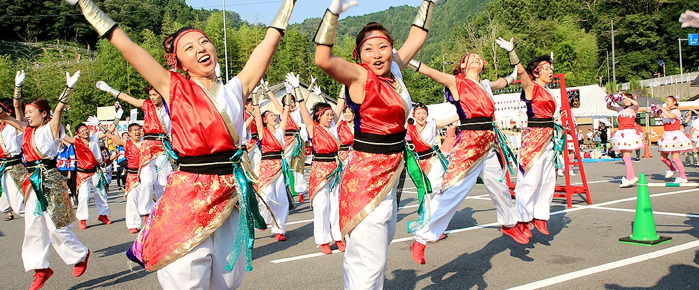

おいでん踊り
豊田のまちに色鮮やかに咲く、市民参加型のまつり。
踊る人も観る人も、心躍り熱くなる、豊田の夏の風物詩。
「踊り連」が、思い思いの衣装で踊る、市民参加型のまつりで、「マイタウンおいでん」と「おいでん総踊り」の2本立てで構成されています。踊り連は、地域の人々の集まりや、友達同士、会社の同僚など、様々なチームで構成されています。


「踊り連」が、思い思いの衣装で踊る、市民参加型のまつりで、「マイタウンおいでん」と「おいでん総踊り」の2本立てで構成されています。踊り連は、地域の人々の集まりや、友達同士、会社の同僚など、様々なチームで構成されています。